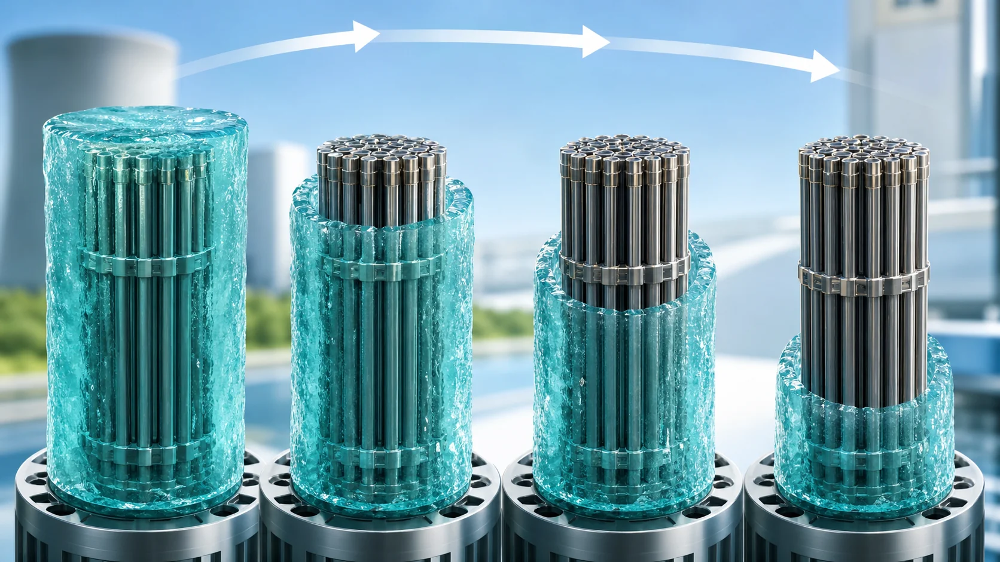
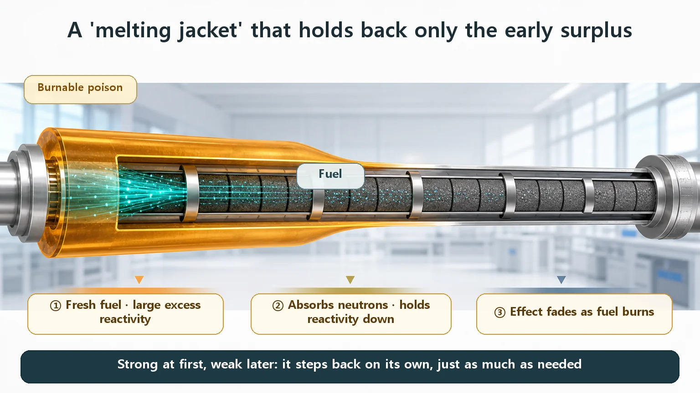
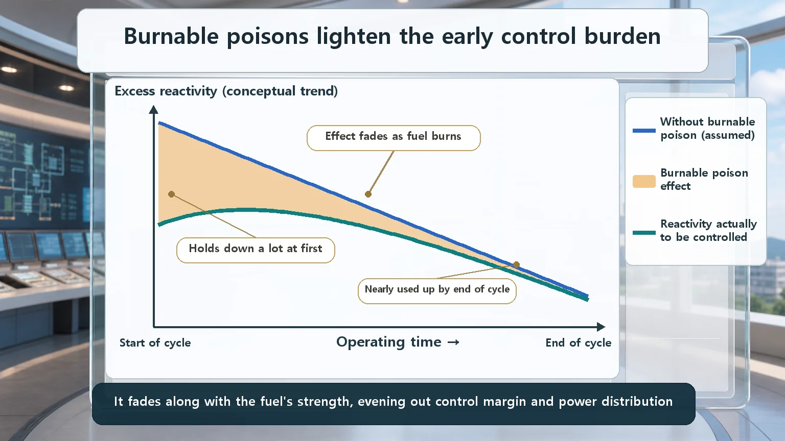

Long-Term Core Behavior & Fuel Cycle · 158
Why Put a Neutron-Eater in a Machine Built to Make Neutrons? — Burnable Poisons Explained
A burnable poison absorbs surplus neutrons when the fuel is fresh and burns itself out by those same neutrons, fading at about the pace the fuel loses strength, like an ice vest that melts on cue.

A burnable poison is a neutron absorber deliberately built into fresh fuel: it holds down the large early excess reactivity and, by absorbing neutrons, gradually uses itself up. Because it fades at about the pace the fuel loses strength, reactivity stays more even through the cycle, power peaks are smoothed and fuel can be used longer. "Poison" here means neutron absorber, not toxicity.
A nuclear reactor is, at heart, a device that keeps a fire going by splitting uranium with neutrons, so every neutron counts. Yet reactor designers do something very strange: they deliberately put a material that eats neutrons inside the core. It's like flooring the accelerator while gently resting your other foot on the brake. Why would anyone do that? The answer is today's subject: the burnable poison.
First, let's clear up the name
"Poison" sounds alarming, but relax. In reactor physics, "poison" has nothing to do with harm to the human body. It is simply the technical term for a material that absorbs neutrons readily and so holds the chain reaction down.
"Burnable" doesn't mean it catches fire; it means it is gradually used up as it does its job. Put the two together: a burnable poison is a material that absorbs neutrons to hold the reaction down and, while doing so, uses itself up and disappears. (It is also called a burnable absorber.)
Why is freshly loaded fuel so full of energy?
So why hold neutrons down at all? The key is when the fuel goes in.
A reactor isn't topped up with a little fuel every day. When it is shut down for refueling, it is packed all at once with enough fuel to run for a long time, usually around a year. It's like stacking a whole year's firewood in the stove before lighting it.
That's where the problem starts. A freshly loaded core has far more spare power to react than it needs right now. The technical name is excess reactivity. Think of it as savings in the bank: what's needed today plus enough to last the coming year. But when all that power wants to jump out at once from day one, keeping it in check is a real burden: control rods have to go deep into the core, or neutron-absorbing material has to be dissolved in the water at high concentration.
Holding back this early surplus ahead of time is the burnable poison's first job.
A jacket of ice that melts by itself
Here comes the clever part. The best picture for a burnable poison is an ice pack.
Picture an energetic rookie athlete who sprints flat-out from the whistle and looks set to burn out early. The coach straps a heavy ice vest on them to tame that early surge. But the real beauty of the ice is this: ice absorbs the heat coming off the body, and that very heat slowly melts it away. It holds on firmly early in the game, and by the time the athlete's energy naturally settles, the ice has disappeared right on cue. Nobody has to take it off midway.
That is exactly what a burnable poison does. In the core it absorbs surplus neutrons and holds down the early excess power. And in absorbing those neutrons, it turns into other materials that no longer absorb well, gradually using itself up. Just as ice melts from the very heat it absorbs, this material burns itself out because of the very neutrons it absorbs. Call it the most punctual bodyguard in the world: it stays only as long as it's needed, then quietly leaves when the job is done.
Perfect timing: why "on its own" matters
"Why not just use control rods? Why a material that disappears by itself?" That question holds the heart of the idea.
As the fuel burns, a reactor's reactivity gradually falls: plenty of power at the start, less toward the end of the cycle. If whatever suppressed the early surplus stayed in place to the end, it would become dead weight just when power has already faded.
A burnable poison solves this elegantly: the suppressor disappears at the same pace as the fuel's power fades. Strong power and strong suppression early; weak power and vanishing suppression late. So the core's overall reactivity doesn't swing wildly but stays relatively even throughout the cycle. In very simple terms:
Fuel's power − power held down by the burnable poison ≈ power that actually has to be controlled
At the start of the cycle both terms on the left are large; at the end both are small. So the difference, the share operators and control systems actually handle, stays manageable from start to finish. Control rods and boric acid need people watching and adjusting them, while a burnable poison, placed well at the design stage, does its job and disappears on its own.

Two bonus gifts
Besides holding down the early power, burnable poisons do two more things.
First, they smooth out the core's power. Some spots in a core tend to collect power and run hot. Placing burnable poison precisely in those spots holds down the reaction there and keeps heat from piling up on one side, like shaving a sharp peak into a gentle hill. Evenly spread power puts less strain on the fuel and the cladding around it.
Second, they let fuel be used longer. With a safe way to hold down the early surplus, designers can load more fuel from the start (or slightly more enriched fuel). The reactor then runs longer on one loading, which stretches the interval between refueling shutdowns.
Not to be confused with the neighbors
Control rods are mechanical rods moved into and out of the core. Operators move them at once to cut the reaction quickly or shut the reactor down. They are reusable and, above all, immediate.
Boric acid is an absorber dissolved in the coolant water. Raising or lowering its concentration slowly adjusts the reaction gently, and it too is managed continuously by operators.
Burnable poisons differ decisively: they sit as a solid built into the fuel or onto its surface, and they use themselves up without anyone touching them. If rods and boric acid are "knobs people turn in real time," a burnable poison is "a device planted at the design stage and left to work on its own."
One more easily confused cousin. As a reactor runs, fission by-products include neutron absorbers that appear by themselves (such as xenon and samarium), called "fission-product poisons." They share the word "poison," but they're the opposite in character: those are unwanted and arrive on their own to cause trouble, while burnable poisons are put in on purpose because designers need them. One is a gatecrasher; the other is an invited guest.

Which materials? (briefly)
So what actually goes in? Typically elements that are exceptionally good at absorbing neutrons, such as boron and gadolinium. They may be mixed into the fuel pellets or applied as a thin coating on the fuel rod surface. Gadolinium in particular has a big effect in very small amounts; how it works is a story of its own.
Today's takeaways
- A burnable poison is a neutron absorber put into the core on purpose; it holds the reaction down and uses itself up as it works. ("Poison" is a reactor physics term for eating neutrons, not toxicity.)
- A freshly loaded core holds a long run's worth of fuel at once, so its early excess reactivity is large and needs something to hold it back.
- The highlight is timing: the suppressor fades at the pace the fuel's power fades, keeping reactivity even through the cycle, like a self-melting ice pack.
- As bonuses, it flattens power where it tends to peak and lets fuel be used longer (longer intervals between refuelings).
- Unlike control rods (immediate, mechanical) and boric acid (chemical adjustment in the coolant), it works and depletes on its own, and it is the opposite of fission-product poisons such as xenon and samarium (invited guest vs gatecrasher).
What looked like pressing the accelerator and the brake together turns out to be a brake engineered to release itself right on time.